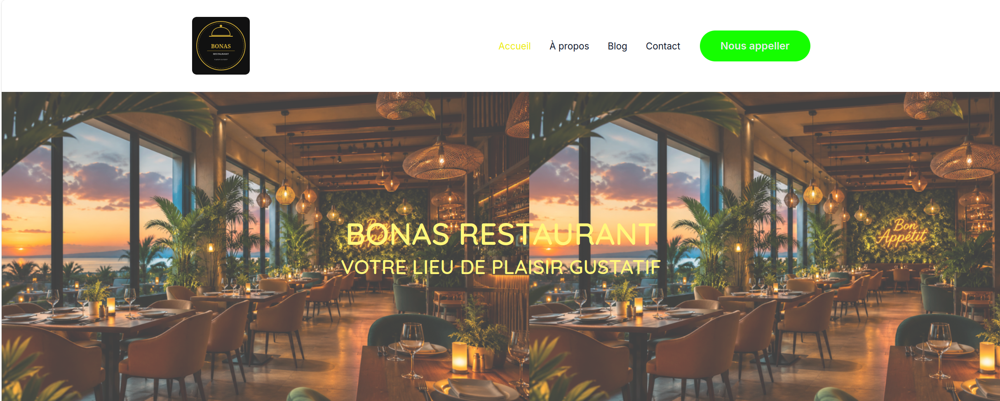

01
Site WordPress pour un restaurant
Courte description : Le client cherchait à améliorer sa visibilité sur Google et à augmenter ses revenus. J'ai développé un site web sur mesure pour répondre à ce besoin.
Voir le site →